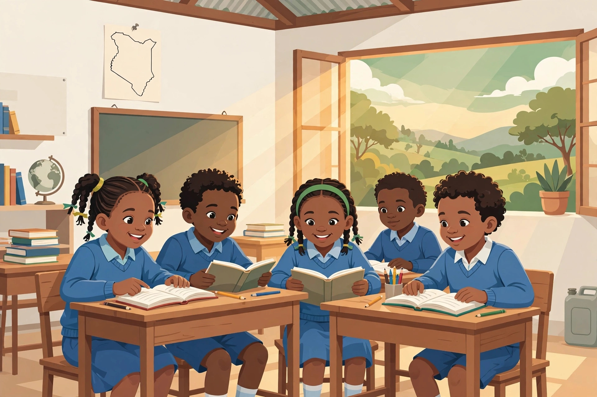

Empowering Education & Hope in Shinyalu, Kakamega
Building brighter futures through education, skills training, and community support. Based in Shinyalu, Kakamega County, Kenya.
120+
Students
3
Schools
300+
Books

Shinyalu students learning
Registered NGO - Based in Shinyalu, Kakamega County, Kenya